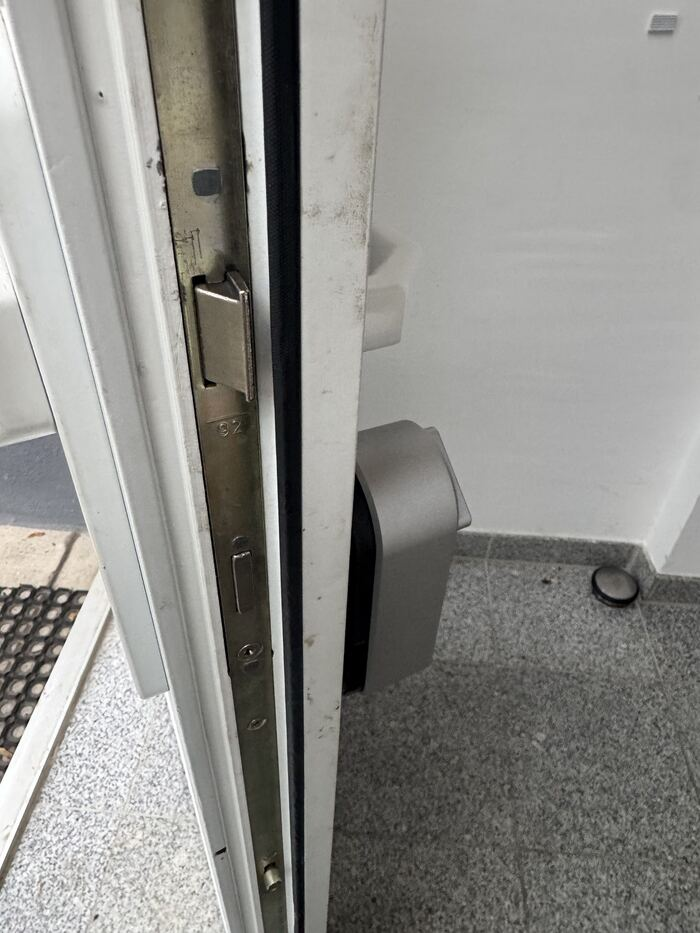

Czujcie się jak w domu! Chcemy, żeby Wasz pobyt był wspaniały, dlatego zebraliśmy tu najważniejsze informacje. W razie pytań lub sugestii piszcie do nas w każdej chwili – miłego pobytu w Fellbach!
Anita & Johannes
📄 Przewodnik PDF (po angielsku)Przyjazd & zameldowanie
Apartament znajduje się w tylnym budynku (Bruckstraße 22/1). Dojazd, miejsce parkingowe i wejście są od tyłu, od ulicy Bruckwiesenweg – nie od Bruckstraße.
📍 Cel nawigacji: BruckwiesenwegJak do nas trafić
- Jedźcie ulicą Bruckstraße i na rogu z czerwonym domem (restauracja Da Patrizia) skręćcie w Bruckwiesenweg.

Samochodem: Bruckstraße (u góry) → Bruckwiesenweg → parking (czerwona linia) - Jedźcie Bruckwiesenweg, aż droga skręci w lewo. Za zakrętem po lewej zobaczycie czerwony budynek z dwiema białymi bramami garażowymi. Parkowanie: zaparkujcie na wybrukowanym placu przed lewą bramą podwójnego garażu (obok kampera) – tę bramę możecie całkowicie zastawić. Prawa brama garażowa musi zawsze pozostać wolna.

Bruckwiesenweg: czerwony budynek z dwoma białymi garażami - Na prawo od garaży jest metalowa brama z zadaszeniem.

Brama na prawo od garaży - Metalowa brama jest otwarta – po prostu przejdźcie. Dalej idźcie pieszo wybrukowaną ścieżką wzdłuż białego domu, obok podwyższonych grządek, aż do białych drzwi wejściowych ze schodkami i szklanym daszkiem.

Ścieżka wzdłuż domu do drzwi 
Białe drzwi wejściowe ze szklanym daszkiem - Klawiatura Yale znajduje się w prawym górnym rogu drzwi wejściowych: dotknijcie klawiatury, aby się podświetliła → wpiszcie swój osobisty kod → potwierdźcie zielonym ✓ → naciśnijcie klamkę. Kod znajdziecie w aplikacji Airbnb przy swojej podróży (instrukcje zameldowania); jest ważny tylko w czasie rezerwacji.

Klawiatura Yale: wpisać kod, potwierdzić ✓ - Na wprost w korytarzu są drzwi z kartką „Air BnB” – to Wasz apartament. Przy przyjeździe klucz jest w zamku.

W korytarzu: drzwi „Air BnB”


Widok z góry

Autobusem & pociągiem: zob. transport. Przystanek autobusowy Cannstatter Platz jest kilka minut pieszo.
Wi-Fi
Apartament & regulamin
- W całym apartamencie obowiązuje zakaz palenia.
- Żadnych imprez ani wydarzeń.
- Cisza nocna od 22:00 do 7:00 – prosimy o ciszę także na podwórzu i w drodze do samochodu.
Warto wiedzieć
- Ogrzewanie & wietrzenie: kaloryfery reguluje się termostatem (poziom 3 ≈ 20 °C). Zimą prosimy wietrzyć krótko, ale intensywnie (okno szeroko otwarte na 5 minut), zamiast zostawiać je uchylone.
- Kawa: do porannej kawy czeka ekspres Senseo. Zwykle zostawiamy kilka saszetek na początek – przy dłuższym pobycie najlepiej kupić opakowanie przy zakupach (dostępne w każdym supermarkecie).
- Śmieci: przy wyjeździe śmieci możecie po prostu zostawić w apartamencie – zajmiemy się nimi.
- W niedzielę wszystkie supermarkety w Niemczech są zamknięte – najlepiej zrobić zakupy w sobotę.
Zakupy, piekarnie & jedzenie
★ = ocena Google (liczba opinii) z naszego rozeznania – aktualne oceny i godziny otwarcia znajdziecie pod „Mapa”. Odległości od apartamentu.
Supermarkety & drogeria


Piekarnie


Jedzenie & picie


Nasze wskazówki – specjalnie dla Was
Dla rodzin
Jedno z najpiękniejszych zoo w Niemczech, z wieloma pawilonami i szklarniami – świetny dzień nawet w zimie lub deszczu.
Kryty basen ze zjeżdżalniami, sauną i nowym światem dżungli dla najmłodszych (otwarty latem 2026). Basen odkryty jest zimą zamknięty.
Płaska, bezbarierowa pętla (ok. 4 km) wśród winnic – łatwa z wózkiem, z widokiem na Fellbach.
130 lat historii motoryzacji na dziewięciu piętrach – ciekawe także dla dzieci i idealne na deszczowy dzień.
Bull Burgerhouse (★ 4,6) jest ok. 50 m dalej, Trattoria Pane e Pino (★ 4,7) ok. 150 m.
Dla par
Szlak winny (ok. 4,3 km) zaczyna się przy Neue Kelter winiarzy z Fellbach (Kappelbergstraße 48) i prowadzi przez winnice do punktu widokowego „Blick über Fellbach”. W każdą pierwszą sobotę miesiąca odbywa się tam otwarta degustacja.
Klasycystyczna kaplica nad winnicami oferuje jeden z najpiękniejszych widoków na dolinę Neckaru. Sama kaplica jest zamknięta od listopada do marca – ale spacer i widok są warte zachodu przez cały rok.
Ciepła woda mineralna w basenach wewnętrznych i zewnętrznych oraz sauna – cudownie relaksujące, zwłaszcza zimą.
Trattoria Pane e Pino (★ 4,7), Irodion (★ 4,6, grecka, teraz w zabytkowej Alte Kelter) albo wygodnie tuż obok w Da Patrizia (★ 4,5).
Esslingen ze starówką z domami z muru pruskiego i zamkiem (ok. 20 min) lub pałac rezydencyjny w Ludwigsburgu, jeden z największych barokowych pałaców w Niemczech (ok. 25 min, zimą z oprowadzaniem).
Dla podróżujących solo & służbowo
Z dworca Fellbach linią S2 lub S3 dojedziecie w ok. 12–15 minut na dworzec główny w Stuttgarcie – Schlossplatz, Königstraße, hala targowa i Staatsgalerie są stamtąd w zasięgu spaceru.
Obowiązkowe punkty dla fanów motoryzacji, każde łatwo zwiedzić w 2–3 godziny. Oba są zamknięte w poniedziałki; Muzeum Porsche jest ponadto zamknięte od 18.01. do 01.02.2027 z powodu remontu.
Pierwsza na świecie wieża telewizyjna z żelbetu – świetna także po pracy: codziennie 10–22, ostatnie wejście 21:30.
Pętla przez Kappelberg wśród winnic i lasu do wieży widokowej – ok. 13,7 km, ok. 4 godziny. Zimą wyruszcie wcześnie (ok. 17:00 robi się ciemno) i uważajcie na oblodzenie w lesie.
Maultaschen i Kässpätzle w Wirthshaus Zum Kuckuck (★ 4,4, 747 opinii) – przytulnie, także dla osób jedzących samotnie.
Wydarzenia w Fellbach & okolicy
Stan na 22.11.2026 · bez gwarancji – przed wizytą sprawdźcie u organizatora.
- 28.11.–22.12.2026Jarmark bożonarodzeniowy w Fellbach
Wokół Lutherkirche i ratusza, ze sceną i atrakcjami dla dzieci. Pon.–śr. 16–20, czw.–niedz. 12–20, wstęp wolny (koniec przewidziany na 22.12.).Centrum Fellbach - 25.11.–23.12.2026Jarmark bożonarodzeniowy w Stuttgarcie
Jeden z najstarszych i największych jarmarków w Europie, ok. 250 stoisk. Niedz.–czw. 11–21, pt. & sob. 11–22.Centrum Stuttgartu · ok. 15 min S-Bahnem - 24.11.–22.12.2026Średniowieczny & bożonarodzeniowy jarmark w Esslingen
Niedz.–czw. 11–20:30, pt. & sob. 11–21:30.Esslingen am Neckar · ok. 20 min - 24.11.–22.12.2026Barokowy jarmark bożonarodzeniowy w Ludwigsburgu
Ok. 150 stoisk w barokowej scenerii, codziennie 11–21.Ludwigsburg · ok. 25 min - do początku/połowy stycznia 2027Christmas Garden w Wilhelmie
Świetlna trasa przez zabytkowy park, wieczorem. Bilety online (christmas-garden.de).Stuttgart-Bad Cannstatt - w każdą 1. sobotęOtwarta degustacja – Fellbacher Weingärtner
Najbliższe terminy: 05.12.2026, 02.01., 06.02. i 06.03.2027.Neue Kelter, Kappelbergstraße 48, Fellbach - 20.01.2027 · 20:00„Huckleberry Finn” z Herbertem Knaupem (po niemiecku)Schwabenlandhalle Fellbach
- 07.02.2027 · 19:00Jezioro łabędzie – Grand Classic BalletSchwabenlandhalle Fellbach
- 20–21.02.202729. targi wina „Die Besten aus dem Remstal”
Ok. 50 winnic w jeden weekend.Alte Kelter, Kelterweg 7, Fellbach - 13.03.2027 · 20:00Azzurro – rewia italo-popSchwabenlandhalle Fellbach
- 20.03.2027Bobby & Max – słuchowisko na żywo dla dzieci, po niemiecku (13:00 & 18:00)Schwabenlandhalle Fellbach
Autobusem & pociągiem
- Autobus: przystanek Fellbach Cannstatter Platz (kilka minut pieszo) – autobusy m.in. na dworzec.
- S-Bahn: dworzec Fellbach – S2 i S3 na dworzec główny Stuttgart (ok. 12–15 min), lotnisko/targi oraz w kierunku Schorndorf lub Backnang. Najwygodniejsze połączenie ze Stuttgartem.
- Kolej miejska U1: z powodu budowy od 13.12.2026 U1 kończy bieg na przystanku Fellbach Schwabenlandhalle. Prawdopodobnie od marca do lipca 2027 zamiast U1 będą kursować autobusy zastępcze do Bad Cannstatt.
Rozkłady i bilety: aplikacja VVS lub DB Navigator – pokazują też aktualne utrudnienia. Deutschlandticket obowiązuje w całym transporcie lokalnym.
🚗 Stuttgart to strefa niskiej emisji: samochody potrzebują zielonej naklejki („Umweltplakette”).
Wyszukiwarka połączeń VVS ↗
Wyjazd
Wymeldowanie do 11:00. Przed wyjściem prosimy:
Mamy nadzieję, że pobyt był udany! Bardzo ucieszy nas Wasza opinia na Airbnb. ⭐
Kontakt & nagłe wypadki
Najszybciej skontaktujecie się z nami przez aplikację Airbnb lub telefonicznie:
Numery alarmowe
- Straż pożarna & pogotowie: 112
- Policja: 110
- Lekarz dyżurny: 116 117
- Apteka dyżurna: aponet.de – wyszukiwarka aptek